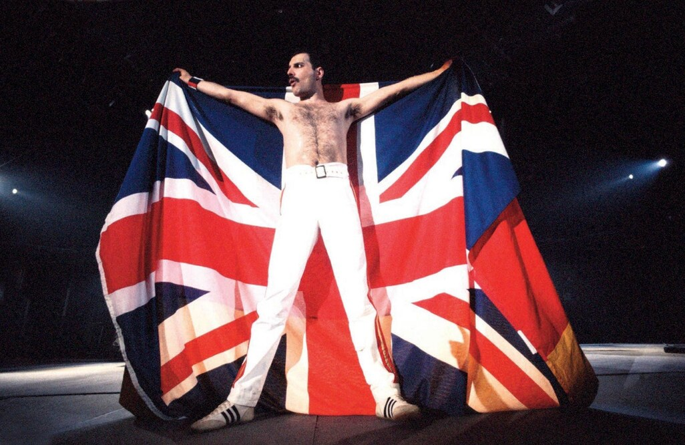
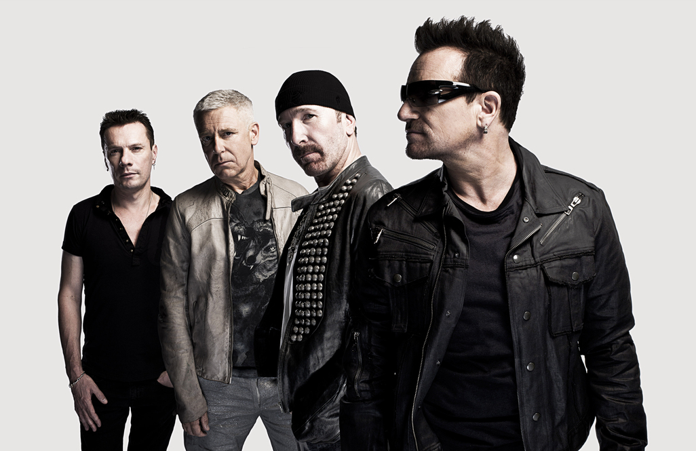

Queen var ett brittiskt rockband som bildades på 1970-talet och blev ett av de mest ikoniska banden i musikhistorien tack vare sin unika stil och sina storslagna produktioner. Medlemmarna, inklusive Freddie Mercury, Brian May, Roger Taylor och John Deacon, skapade en rad odödliga låtar som kombinerade rock, opera och pop på ett sätt som få andra band lyckats med. Album som *A Night at the Opera*, *News of the World* och *The Game* innehåller klassiker som fortfarande spelas över hela världen. Bandet var också känt för sina spektakulära liveframträdanden, inte minst deras legendariska insats på Live Aid 1985. Trots Freddie Mercurys bortgång fortsätter Queens musik att leva vidare och inspirera nya generationer av lyssnare och artister världen över.

U2 är ett irländskt rockband som bildades i slutet av 1970-talet och har blivit en av de mest framgångsrika och inflytelserika grupperna inom modern musik. Bandet består av Bono, The Edge, Adam Clayton och Larry Mullen Jr., och deras samarbete har varit en viktig del av deras långvariga framgång. Med album som *The Joshua Tree*, *Achtung Baby* och *All That You Can’t Leave Behind* har de skapat en rad välkända låtar som kombinerar känslosamma texter med storslagna ljudlandskap. U2 är också känt för sina engagerande liveframträdanden och sitt arbete med sociala och politiska frågor. Trots förändringar inom musikindustrin har de fortsatt att vara relevanta och uppskattade, och deras musik har haft ett stort inflytande på både fans och andra artister världen över.